IO控制系统操作说明¶
概述¶
IO控制系统是Horizon具身智能机械臂的外部信号交互模块，通过ESP32微控制器实现数字输入(DI)和数字输出(DO)的控制，支持外部设备触发机械臂作业执行和机械臂状态输出。
IO界面
硬件连接¶
ESP32引脚映射¶
数字输入(DI) - 用于接收外部信号¶
| DI编号 | ESP32 GPIO | 功能描述 | 连接说明 |
|---|---|---|---|
| DI0 | GPIO23 | 数字输入0 | 内部上拉，低电平有效 |
| DI1 | GPIO22 | 数字输入1 | 内部上拉，低电平有效 |
| DI2 | GPIO17 | 数字输入2 | 内部上拉，低电平有效 |
| DI3 | GPIO16 | 数字输入3 | 内部上拉，低电平有效 |
| DI4 | GPIO21 | 数字输入4 | 内部上拉，低电平有效 |
| DI5 | GPIO19 | 数字输入5 | 外部上拉 |
| DI6 | GPIO18 | 数字输入6 | 外部上拉 |
| DI7 | GPIO5 | 数字输入7 | 外部上拉 |
数字输出(DO) - 用于输出控制信号¶
| DO编号 | ESP32 GPIO | 功能描述 | 连接说明 |
|---|---|---|---|
| DO0 | GPIO2 | 数字输出0 | 3.3V输出 |
| DO1 | GPIO4 | 数字输出1 | 3.3V输出 |
| DO2 | GPIO25 | 数字输出2 | 3.3V输出 |
| DO3 | GPIO26 | 数字输出3 | 3.3V输出 |
| DO4 | GPIO27 | 数字输出4 | 3.3V输出 |
| DO5 | GPIO32 | 数字输出5 | 3.3V输出 |
| DO6 | GPIO33 | 数字输出6 | 3.3V输出 |
| DO7 | GPIO13 | 数字输出7 | 3.3V输出 |
ESP32针脚示意¶
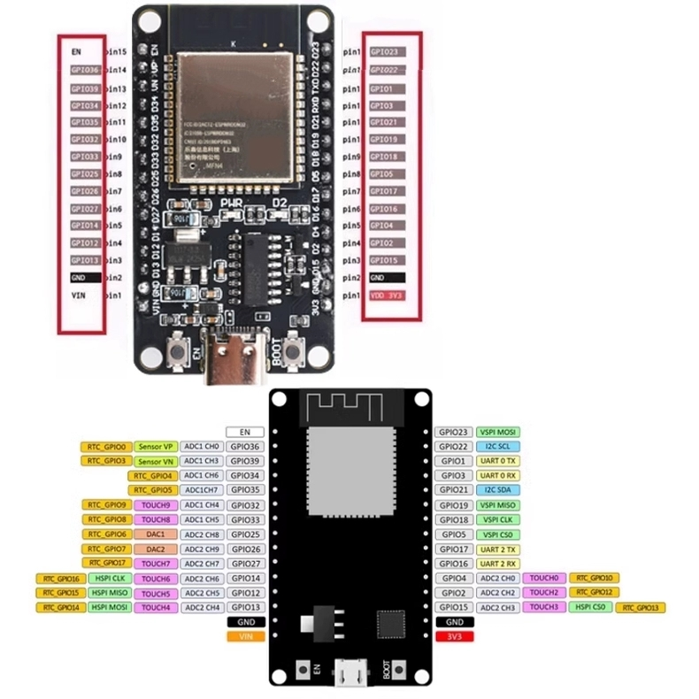
GPIO引脚示意
接线建议¶
DI接线示例¶
外部设备 -----> DI引脚
|
GND -----> ESP32 GND
DO接线示例¶
DO引脚 -----> 外部设备输入
|
ESP32 GND -----> 外部设备GND
软件操作指南¶
1. ESP32连接设置¶
- 打开IO控制界面
- 启动主程序
- 点击"IO控制"标签页
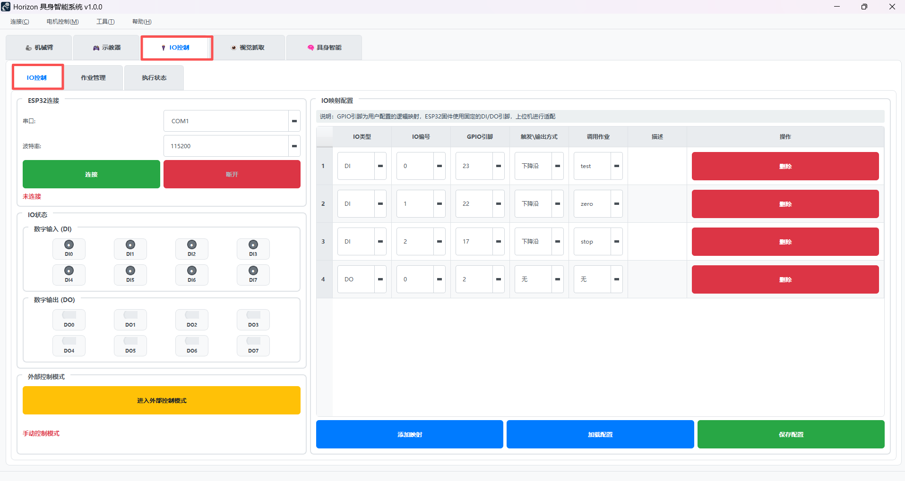
- 连接ESP32
- 选择正确的串口（打开设备管理器进行查看）
- 波特率设置为115200
- 点击"连接"按钮
- 连接成功后状态显示"已连接"
2. IO映射配置¶
IO映射配置用于定义哪些IO口被使用，以及它们的功能。
2.1 添加DI映射¶
- 点击"添加映射"按钮
- 配置DI参数：
- IO类型：选择"DI"
- IO编号：选择0-7（对应DI0-DI7）
- GPIO引脚：用户需自定义显示（
需要参考 ESP32引脚映射） - 触发方式：
上升沿：信号从低变高时触发下降沿：信号从高变低时触发高电平：信号为高电平时持续触发低电平：信号为低电平时持续触发
- 调用作业：选择要触发的作业名称（
需要在作业管理里面添加作业） - 描述：自定义描述，如"执行某某作业"
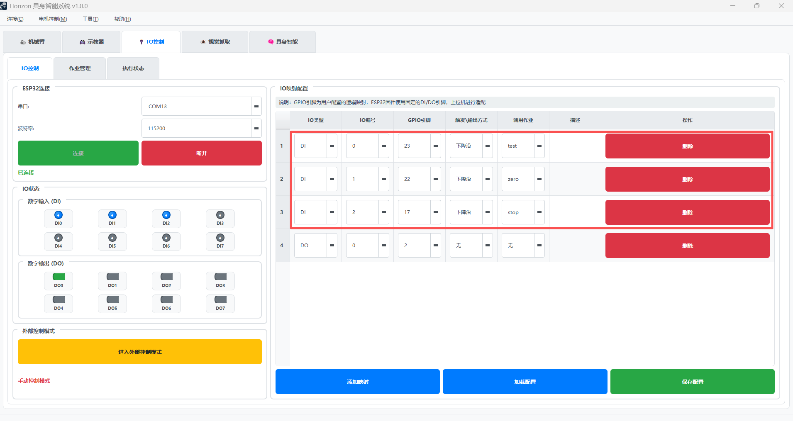
2.2 添加DO映射¶
- 点击"添加映射"按钮
- 配置DO参数：
- IO类型：选择"DO"
- IO编号：选择0-7（对应DO0-DO7）
- GPIO引脚：用户需自定义显示（
需要参考 ESP32引脚映射） - 触发\输出方式：显示"无"（不可选择）
- 调用作业：显示"无"（不可选择）
- 描述：自定义描述，如"某设备启动信号"
2.3 保存配置¶
- 点击"保存配置"按钮
- 选择保存位置（默认保存到config/io_control/目录）
- 配置文件格式为JSON
3. IO状态显示¶
IO状态显示区域实时显示所有DI和DO的当前状态，帮助用户监控IO信号。
3.1 数字输入(DI)状态显示¶
DI状态以LED指示器的形式显示，位于"IO控制"标签页左侧：
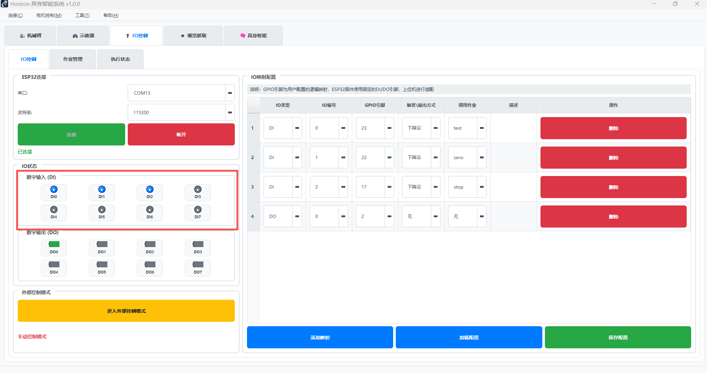
状态指示颜色¶
- 🔵 蓝色LED：DI为高电平且已在IO映射中配置
- 🟢 绿色LED：DI为低电平且已在IO映射中配置
- 🔴 红色LED：DI已配置但GPIO配置错误
- ⚫ 灰色LED：DI未配置或ESP32未连接
显示信息¶
- 鼠标悬停：显示详细信息
- 格式：
DI0 (GPIO23): 高电平 - 启动按钮 - 包含：DI编号、GPIO引脚、当前电平、用户描述
实时更新¶
- 状态每20ms更新一次
- 支持边沿检测和电平检测
- 自动识别触发条件
3.2 数字输出(DO)状态显示¶
DO状态以开关样式的复选框显示，支持手动控制：
状态指示颜色¶
- 🔵 蓝色开关：DO为高电平且已在IO映射中配置
- 🟢 绿色开关：DO为低电平且已在IO映射中配置
- 🔴 红色开关：DO已配置但GPIO配置错误
- ⚫ 灰色开关：DO未配置或ESP32未连接
手动控制¶
- 点击开关：直接控制DO输出电平
- 实时反馈：开关状态与实际输出同步
- 禁用状态：ESP32未连接时开关被禁用
显示信息¶
- 鼠标悬停：显示详细信息
- 格式：
DO0 (GPIO2): 高电平 - 设备启动信号 - 包含：DO编号、GPIO引脚、当前电平、用户描述
3.3 连接状态指示¶
ESP32连接状态¶
- 🟢 "已连接"：ESP32正常连接，IO状态实时更新
- 🔴 "未连接"：ESP32未连接，所有IO显示为灰色
外部控制模式状态¶
- 🟢 "外部控制模式"：系统监控DI信号，支持自动触发作业
- 🟡 "手动控制模式"：仅支持手动控制，不监控DI触发
3.4 状态监控技巧¶
信号调试¶
- 观察DI状态：通过LED颜色变化确认外部信号是否正常
- 测试DO输出：手动点击DO开关测试外部设备响应
- 检查配置：红色指示器表示配置错误，需检查GPIO设置
故障诊断¶
- 灰色指示器：检查ESP32连接和IO映射配置
- 红色指示器：检查GPIO引脚配置是否与实际硬件匹配
- 无响应：检查外部设备接线和供电
4. 作业管理¶
4.1 创建作业¶
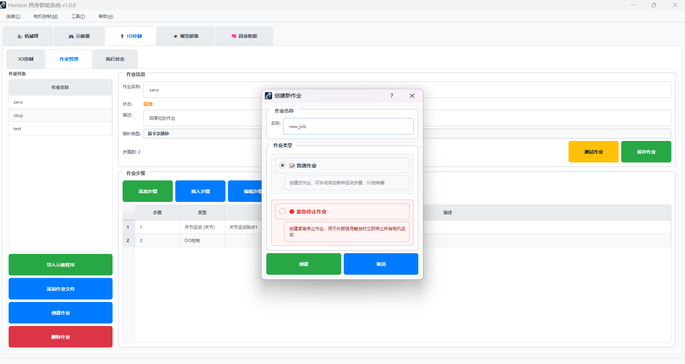
- 点击"创建作业"按钮
- 选择作业类型：
- 📝 普通作业：创建空作业，可手动添加各种步骤
- 🛑 紧急停止作业：创建紧急停止作业，立即停止所有电机
- 输入作业名称
- 点击"创建"
4.2 导入示教程序¶
- 点击"导入作业"按钮
- 选择作业文件：选择已保存的作业文件（JSON格式）
关于插补类型的显示： 这个取决于示教器保存时候选择的插补类型，Y板支持关节插补、笛卡尔插补，X板支持关节插补
注意：这里的示教程序需要在示教器里进行示教编程后进行保存的程序才能用于IO控制的作业
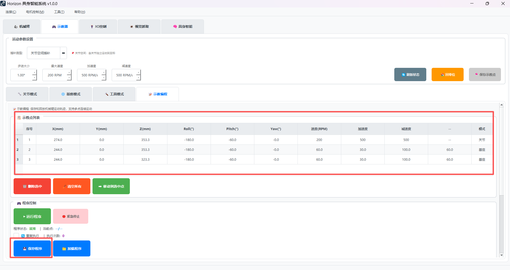
4.3 添加作业步骤¶
作业步骤是作业的基本执行单元，支持多种类型：
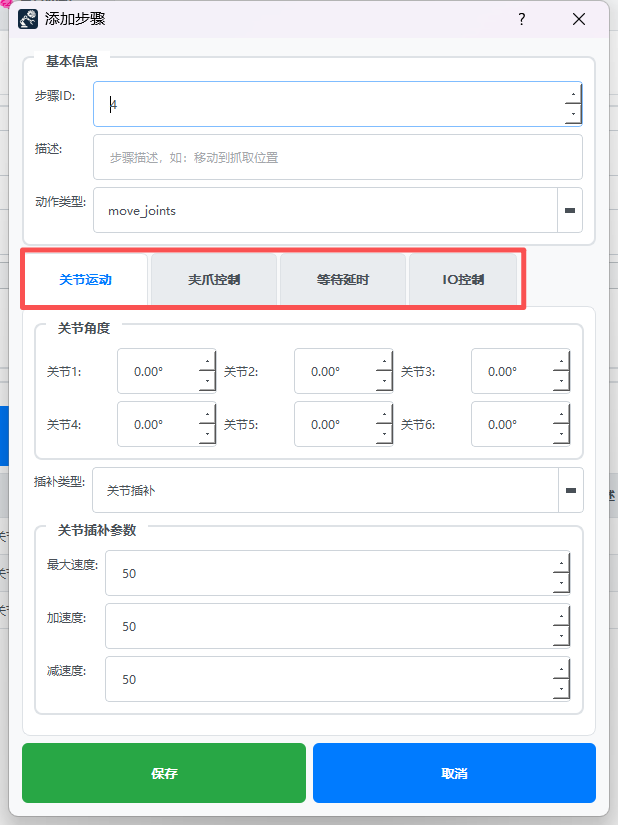
关节运动步骤¶
- 用途：控制机械臂移动到指定位置
- 参数：关节角度、插补类型、速度等
- 应用场景：移动到抓取位置、放置位置等
夹爪控制步骤¶
- 用途：控制夹爪开合（
需要在连接夹爪栏完成夹爪的连接才能使用） - 参数：动作（开/关）、角度
- 应用场景：抓取物体、释放物体
等待步骤¶
- 用途：在作业中添加延时
- 参数：等待时间（秒）
- 应用场景：等待外部设备响应、稳定时间
IO控制步骤 ⭐¶
- 用途：控制DO口输出信号
- 参数：
- DO选择：选择要控制的DO口
（
DO口的显示需要先在IO映射配置进行对应DO的配置先，包含IO编号、GPIO引脚） - 输出电平：选择"高电平"或"低电平"
- 应用场景：
- 启动外部设备
- 发送完成信号
- 控制指示灯
- 触发其他系统
5. 外部控制模式¶
5.1 启用外部控制¶
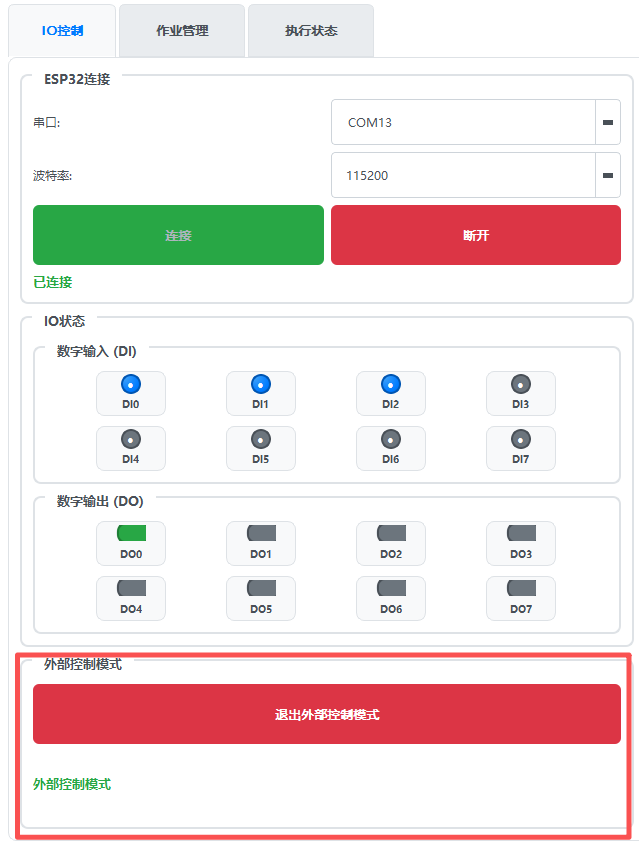
- 确保ESP32已连接
- 点击"进入外部控制模式"
- 状态显示"外部控制模式"
5.2 外部信号触发¶
在外部控制模式下，系统会监控DI状态变化： - 当DI信号满足触发条件时，自动执行对应的作业 - 支持多个DI同时监控 - 紧急停止作业具有最高优先级，可中断正在执行的作业
应用示例¶
以下是一个完整的IO控制系统配置和使用示例，演示如何实现外部按钮触发机械臂执行抓取作业。
应用场景¶
- 外部按钮：操作员按下启动按钮
- 机械臂动作：执行预设的抓取放置作业
- 状态指示：通过LED灯显示作业执行状态
1、添加作业¶
- 创建作业：创建一个"普通作业"或者导入示教程序，示例为示教程序
- 如有需要可以添加步骤、插入步骤、修改步骤：
- 关节运动：移动到抓取位置
- 夹爪控制：夹爪闭合
- 等待：等待1秒稳定
- IO控制：输出完成信号（DO0高电平）
- 夹爪控制：夹爪打开
- 关节运动：移动到初始位置
- IO控制：复位完成信号（DO0低电平）
- 保存作业：保存作业到选定目录下
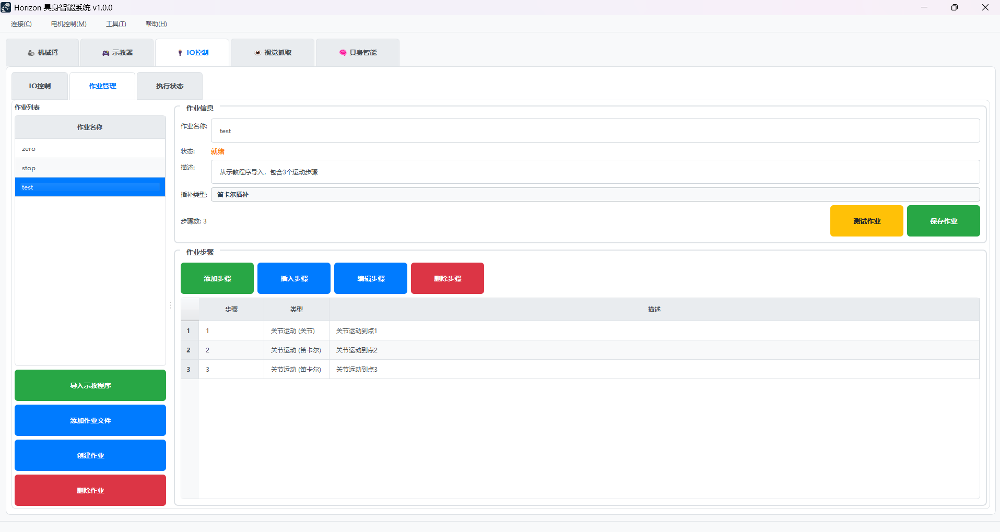
2、添加IO映射¶
- 添加DI映射：将DI0映射到"测试作业"，触发方式为"下降沿"
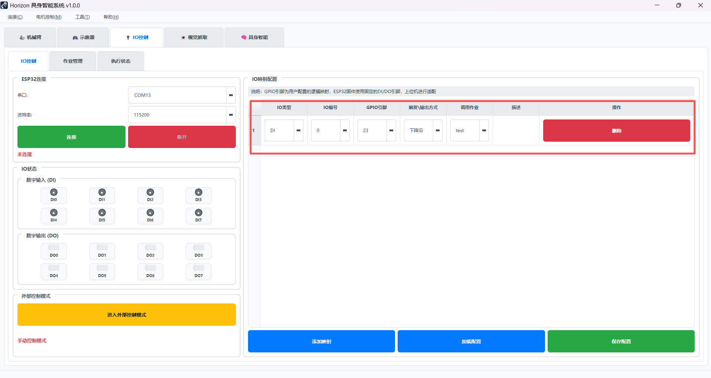
3、连接ESP32，进入外部控制模式¶
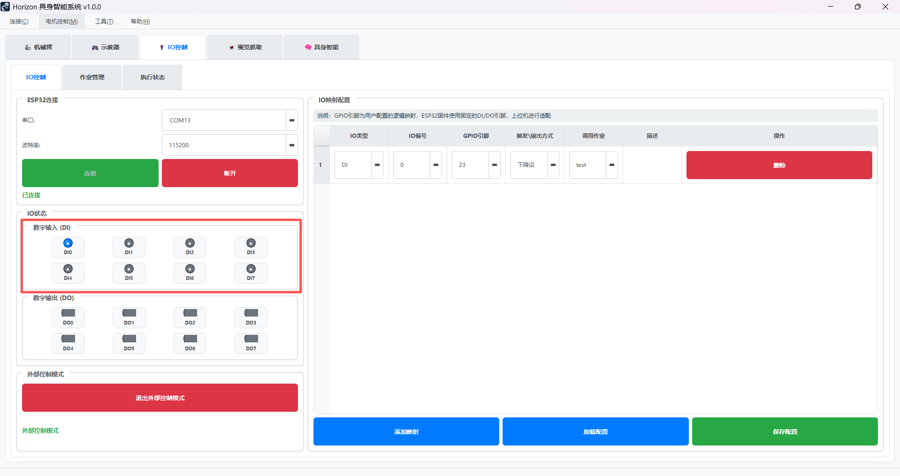
4、测试¶
- 触发下降沿：连接
GPIO23跟GND，触发"下降沿" - 观察IO状态跟机械臂状态：DI0状态变化为绿色，机械臂执行"test作业"里面的轨迹
- 验证DO输出：观察DO0状态变化，确认外部设备收到信号
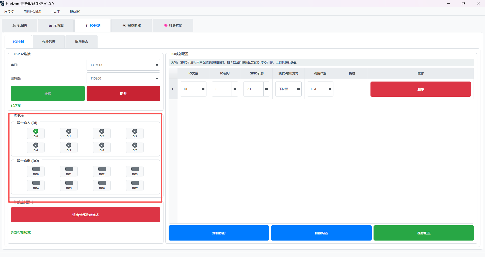
故障排除¶
常见问题¶
1. ESP32连接失败¶
- 检查串口：确认ESP32设备管理器中的COM口号
- 检查波特率：确保设置为115200
- 检查USB线：使用数据传输线，非充电线
- 重启设备：断开重连ESP32
2. DI信号无响应¶
- 检查接线：确认DI引脚连接正确
- 检查电平：DI0-DI4需要低电平触发(
触发下降沿) - 检查映射：确认IO映射配置正确
- 检查模式：确保已进入外部控制模式
3. DO输出无效果¶
- 检查接线：确认DO引脚连接正确
- 检查负载：确认外部设备功耗在ESP32承受范围内
- 检查作业：确认作业中包含IO控制步骤
- 检查电平：确认输出电平设置正确
4. 作业执行异常¶
- 检查步骤：确认作业步骤配置完整
- 检查设备：确认机械臂、夹爪等设备正常连接
- 查看日志：在执行状态页面查看详细错误信息
技术规格¶
电气特性¶
- 工作电压：3.3V
- 输入电流：最大40mA每引脚
- 输出电流：最大40mA每引脚
- 输入阻抗：内部上拉约10kΩ
- 响应时间：<1ms
通信协议¶
- 接口：USB串口
- 波特率：115200
- 数据位：8
- 停止位：1
- 校验位：无
IO控制系统 | 让生产线集成更便捷
© 2025 Horizon Arm • 智能、灵活、易用